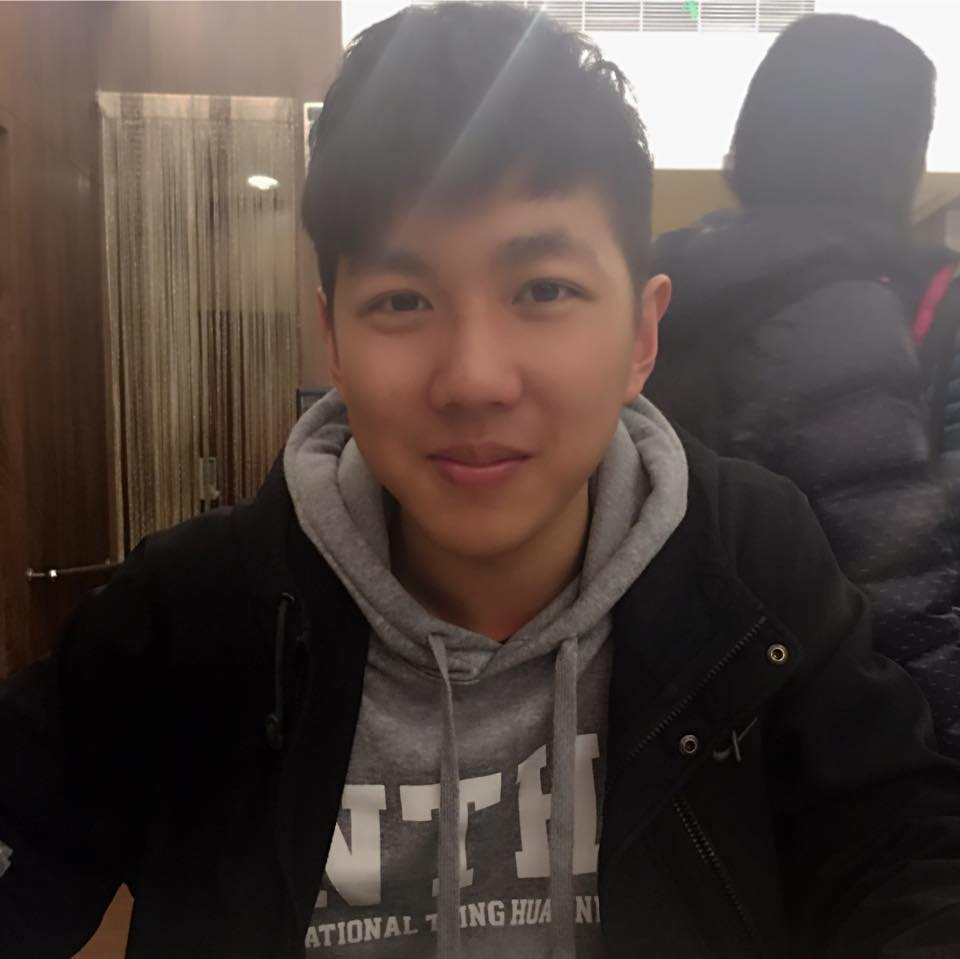
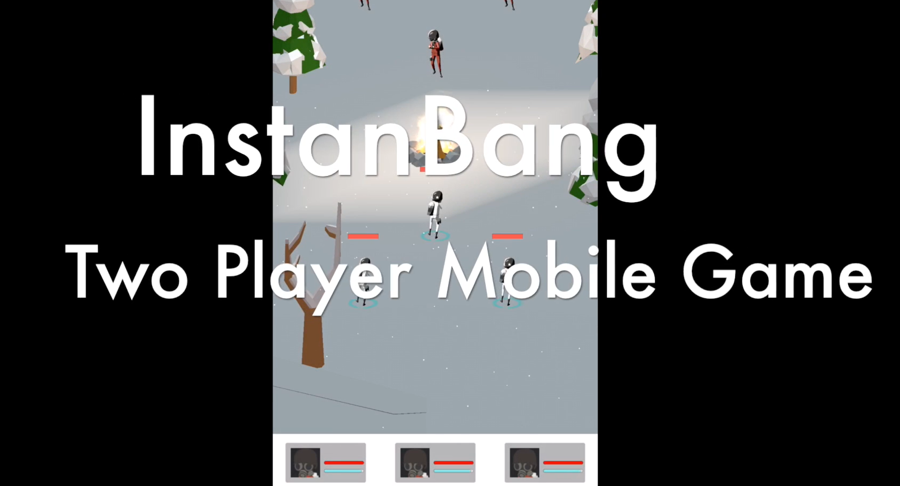
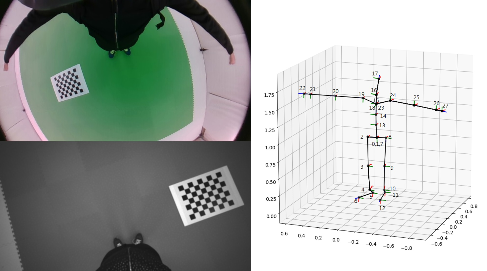
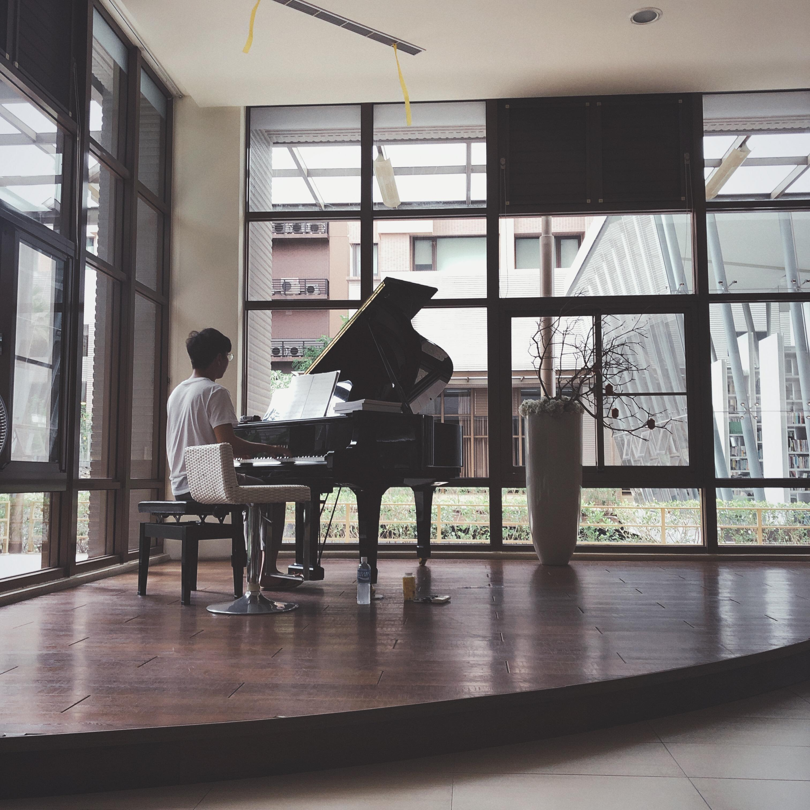
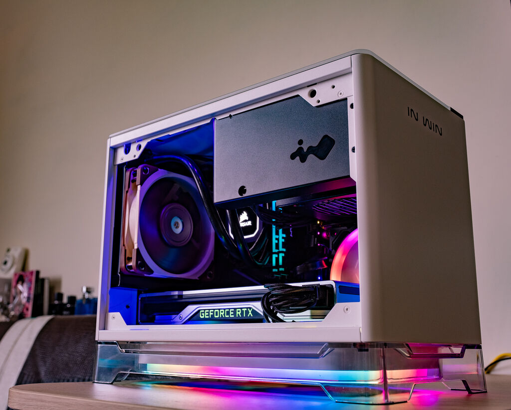

Cong-Yao, Huang (Gary)
I'm a fresh graduate student with a bachelor's degree in Electrical Engineering & Computer Science. Recently, I'm doing some research and study on Reinforcement Learning and Computer Vision.
I've worked on some projects in my college life, here are some interesting ones:
- I developed an DSP audio device that turns any sound source into theater experience.
- I collaborated with classmates to build an arcade game using Unity. 
- I developed a workflow to generate 3D pose ground truth automatically. 
I studied music when I was in my high school, I was major in Violin, minor in Piano. In my leisure time,I enjoy playing some pop musics.
I also have a special talent - Perfect Pitch, which makes me easy to understand the tone of every single chord in a song, or even the word when someone's talking.
I like electronic devices, such as PC, mobile phone, cameras...etc. I love to build cool PCs with custom appearence!
Recently I'm keen on learning to take photos, I went to mountains to shoot some galaxy and sunrise, I went to riverside to find some fireflies, I went to racing circuit to shoot cars and motors and portraits.
Click here to see more photos I took recently!